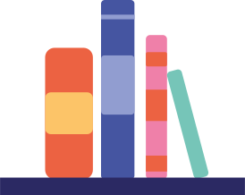
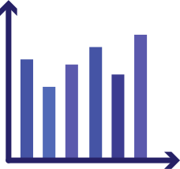
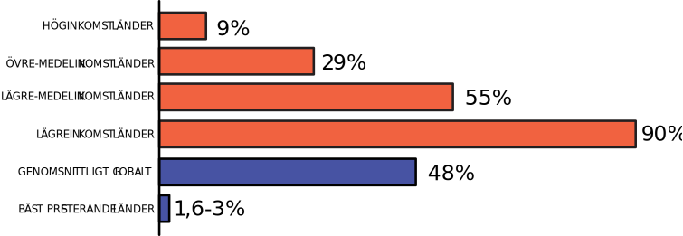

Rätt till utbildning:
nyckeln till framgång!
Rätt till en utbildning
Rätten till utbildning är en grundläggande mänsklig rättighet som inte bara berikar individen utan också stärker samhället. Genom att säkerställa tillgång till utbildning för alla möjliggör vi en inkluderande och jämlik miljö. Internationella
överenskommelser, som FN:s deklaration om mänskliga rättigheter, understryker vikten av att avlägsna hinder för utbildning. Att investera i utbildning är att investera i hållbar utveckling och en framtid där varje individ har möjlighet att blomstra och bidra till samhällets framsteg.
Kostnader
I dagens globala samhälle står kostnaden för utbildning som ett betydande hinder för många människor. Trots att utbildning anses vara en grundläggande rättighet, möter många ekonomiska hinder som begränsar deras tillgång till skolgång. Avgifter, utbildningsmaterial och andra kostnader kan utgöra en betungande börda, särskilt för familjer med låga inkomster. För många barn och unga runt om i världen innebär dessa ekonomiska utmaningar att de inte har möjlighet att delta i grundläggande utbildning. Detta skapar orättvisor och förstärker socioekonomiska klyftor, där tillgången till en kvalitativ utbildning blir en lyx som inte alla har råd med.
I vissa områden kan även indirekta kostnader, som transport till skolan och förlorad arbetsinkomst för föräldrar när de stödjer sina barns utbildning, utgöra hinder. Dessutom kan könsbaserade normer och förväntningar förvärra situationen för flickor och kvinnor, vilket resulterar i att de står inför

större hinder när det gäller att finansiera sin utbildning.
Tillgång och möjligheter
Trots de globala framstegen inom utbildning står vi inför en betydande utmaning – att säkerställa lika tillgång och möjli- gheter till skola för alla. Många samhällen, särskilt i låginkom- stländer, kämpar med betydande brister i resurser och infra- struktur, vilket utgör ett hinder för barn att få en grundlägga- nde utbildning. Utmaningarna sträcker sig till att omfatta könsbaserade ojämlikheter och diskriminering, vilket inte bara förvärrar de redan existerande klyftorna utan även begränsar möjligheterna för sårbara grupper. Att möta dessa hinder krä- ver en enad front av internationellt samarbete och hållbara insatser för att säkerställa att varje barn, oavsett bakgrund
ges möjligheten att realisera sin fulla potential genom utbildning. Genom att investera klokt och strategiskt i utbildning kan vi inte bara bryta ned dessa barriärer utan också bygga en mer rättvis och inkluderande värld. Denna investering ger varje individ verk- tyg för personlig och samhällelig
framgång och skapar grund för en hållbar global gemenskap.
Ett av sex barn
lever utan chans till utbildning
Det är ett barn för mycket
I dagens värld hyllas utbildning ofta som nyckeln till att låsa upp en ljusare framtid. Trots detta pågår en tyst kris
som påverkar miljontals barn globalt och som nekas tillgång till skola. Konsekvenserna av denna utbildningsbrist är djupgående och upprätthåller en cykel av fattigdom samtidigt som den hindrar utvecklingen av hela samhällen. Enligt UNESCO var uppskattningsvis 258 miljoner barn världen över utan skolgång innan COVID-19-pandemin slog till. Dessa siffror är alarmerande och ger en tydlig bild av omfattningen av problemet. Många av dessa barn bor i områden drabbade av konflikter, fattigdom eller diskriminering, vilket förvärrar de utman- ingar de står inför när det gäller att få tillgång till kvalitetsutbildning.
Andel barn som inte kan läsa med förståelse vid slutet av grundskolan
Fyra olika sätt att hjälpa till
Hjälp utsatta skolor och barn genom att bidra med material som pennor, papper, böcker eller ryggsäckar. När du bidrar med material till elever i utsatta områden hjälper du kampen mot analfabetism och hjälper samhällen att utvecklas.

Förändra ett barns framtid genom sponsring! Genom att stödja ett barns utbildning ger du dem verktygen att bryta den onda cirkeln av fattigdom. Dina bidrag täcker väsentligheter som böcker, uniformer och skolavgifter, vilket säkerställer att de har tillgång till en kvalitativ utbildning.
Hjälp ett barn att få en bättre barndom och skolgång, bli fadder. Som fadder skänker du en summa pengar varje månad för att se till så att ditt barn får en bra utbildning. Förutom utbildning hjälper du även ditt barn med att få förnödenheter som mat, sjukvård och rent vatten.
Gör en varaktig påverkan på ett barns liv genom att volontära som mentor. Dela med dig av din kunskap, färdigheter och erfarenheter för att inspirera och guida dem mot en ljusare framtid. Oavsett om det handlar om handledning, karriärrådgivning eller helt enkelt att vara en positiv förebild kan din tid och vägledning forma ett barns utbildningsresa och hjälpa dem bygga en stark grund för framgång.